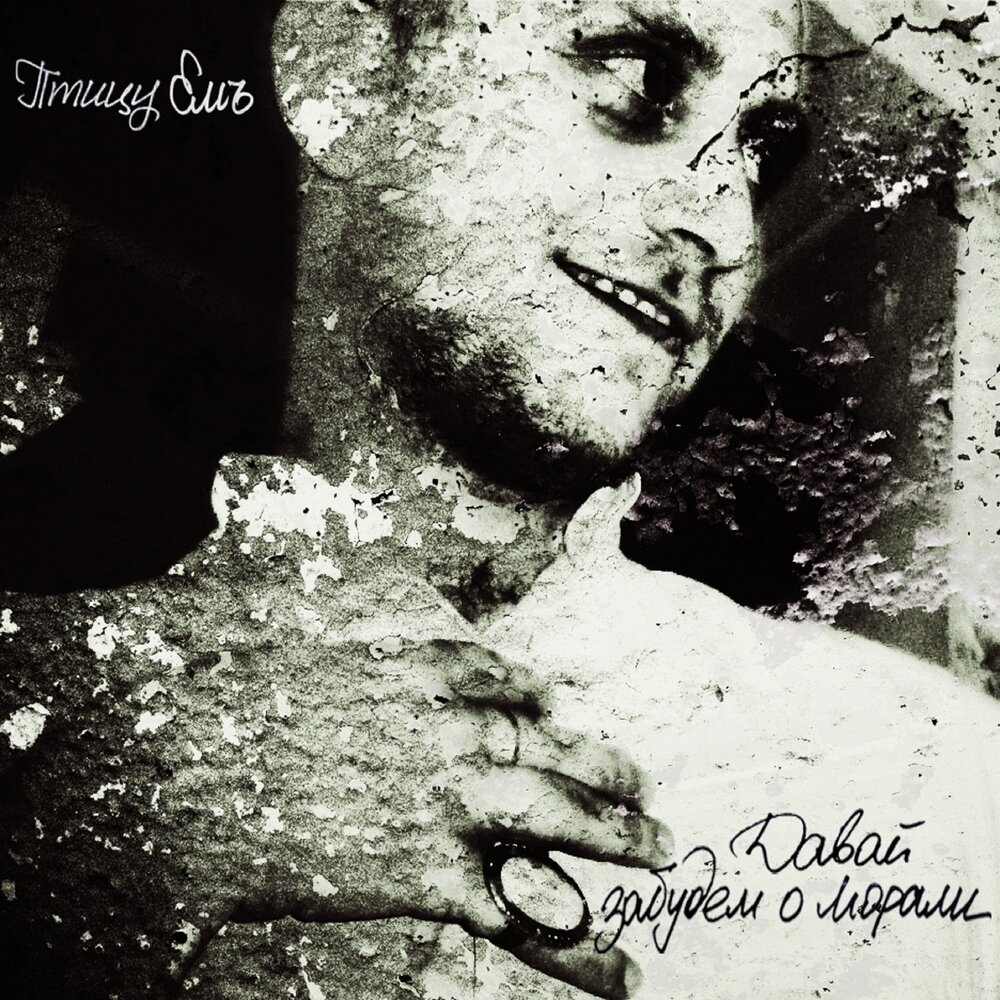
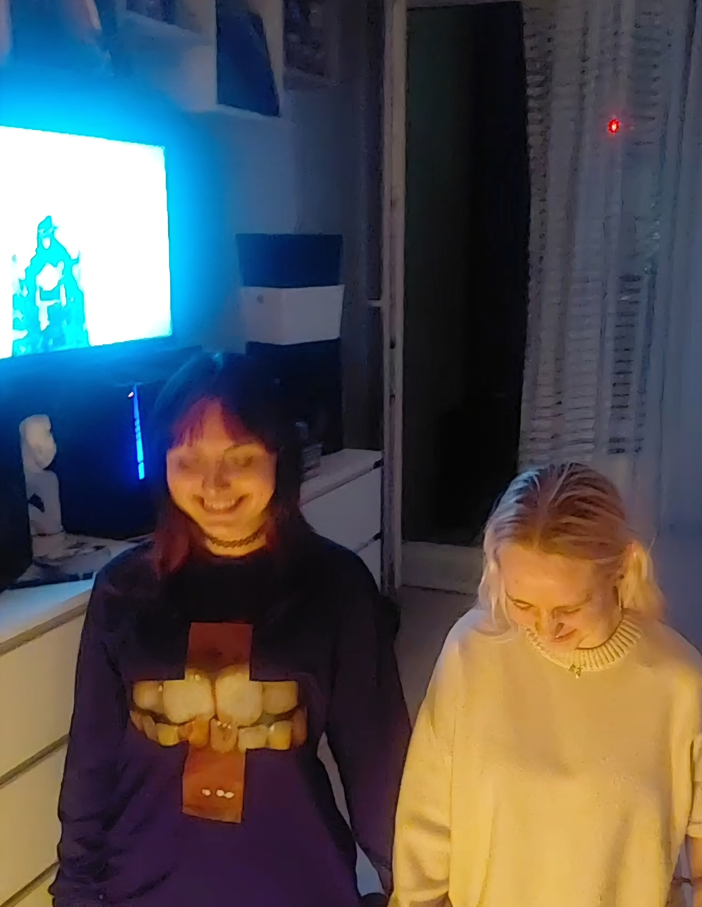

Видеохроника
запись из свинарнии
Лица хроник


Птица Емъ
Екатеринбург — город, где даже птицы знают, что такое Емъ. «Птица Емъ» — не просто название, это состояние души, в котором ты одновременно и алкаш, и свинарния, и немного поэт.
Хроники фиксируют всё: ночные выходы, утренние прозрения, разговоры с подругой на остановке и тот самый взгляд Ситникова, который невозможно повторить.
«Мы не пьём — мы исследуем.»